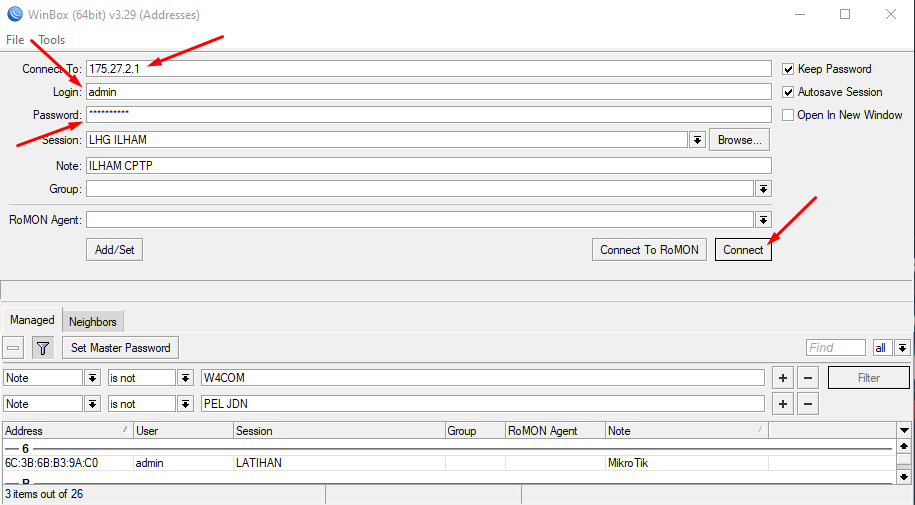
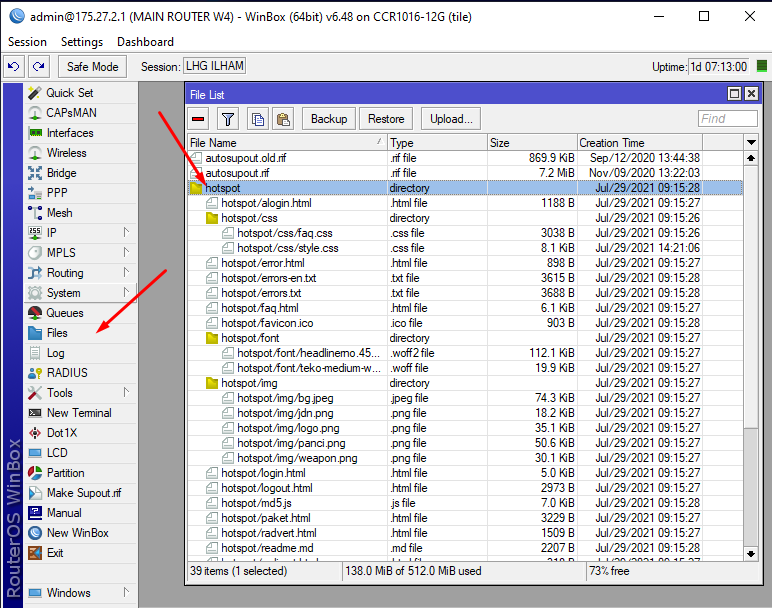

Menu navigasi merupakan element penting di template hotspot, penggunaan menu navigasi ini tentunya dapat mempermudah pelanggan hotspot untuk menemukan fitur - fitur yang tersedia di jaringan hotspot kita.
Buat kamu ingin menggunakan menu navigasi di tampilan hotspot, kamu bisa ikuti step by step di bawah ini :
Sebelum kamu melakukan edit tampilan hotspot, siapkan terlebih dahulu tools nya agar lebih mudah untuk mengedit code tampilan hotspot kamu.
- Tools yang harus kamu siapkan :
- Code Editors : Kamu bisa gunakan Sublime Text | Notepad++ | MS VSCode Atau code editor yang biasa kamu gunakan, Tools ini akan digunakan sebagai aplikasi mengedit code di dalam file HTML/CSS tampilan hotspot kamu.
- FTP Tools : Ftp tools ini digunakan untuk melakukan remote files ke mikrotik kamu dengan mudah. kamu bisa gunakan WinSCP | FileZilla ataupun kamu juga bisa menggunakan aplikasi bawaan mikrotik yaitu Winbox dengan metode drag and drop file ke winbox
- Download File Font Awesome :
- Style CSS Font Awesome - font-awesome.min.css
- Font Awesome 1 fontawesome-webfont.woff
- Font Awesome 2 fontawesome-webfont.woff2
Setelah file Font Awesome diatas terdownload, buat folder baru di dalam folder hotspot kamu, lalu beri nama "css" dan "fonts", tempatkan fontawesome-webfont.woff dan fontawesome-webfont.woff2 kedalam folder "fonts", dan file "font-awesome.min.css" ke dalam folder "css".
Download File Template Hotspot dari Mikrotik Kamu
Untuk mendownload file tampilan hotspot dari Mikrotik kamu, silahkan buka aplikasi Winbox yang telah kamu download tadi sebelumnya.
- Buka Winbox
- Isikan IP Mikrotik
- Login dan Password
- Klik tombol Connect
- Buka menu File
- Pada bagian sebelah kanan cari nama folder tampilan hotspot kamu misal "hotspot"
- Tarik Folder "hotspot" tersebut ke komputer kamu bisa dimana saja, untuk lebih mudah silahkan tarik saja ke Desktop


Buka File login.html cari kode </head> lalu paste kode dibawah ini tepat diatas kode </head>
<link rel="stylesheet" href="css/font-awesome.min.css">Buka file login.html menggunakan code editor lalu cari bagian tag HTML <body> dan Copy Paste Code dibawah ini persis dibawah tag <body>
<nav>
<button onclick="window.location = 'login.html';"><i class="fa fa-home c1"></i> Home</button>
<button onclick="window.location = 'paket.html';"><i class="fa fa-dollar c2"></i> Paket</button>
<button onclick="window.location = 'bantuan.html';"><i class="fa fa-info-circle c3"></i> Bantuan</button>
<button onclick="window.location = 'contact.html';"><i class="fa fa-comments-o c4"></i> Contact</button>
</nav>Buka file CSS tampilan hotspot kalian, biasanya ada di dalam folder CSS sebagai contoh "style.css", sesuaikan dengan keadaan file kamu.
---- tambahkan kode ini dibawah body -----
body{
position:relative;
}
nav {
position: fixed;
bottom: 0;
left: 0;
background-color: #fff;
width: 100%;
height: 50px;
z-index: 100;
display: -webkit-box;
display: -ms-flexbox;
display: flex;
-ms-flex-pack: distribute;
justify-content: space-around;
-webkit-box-align: center;
-ms-flex-align: center;
align-items: center;
}
nav button {
width: 25%;
height: 50px;
background-color: #dadada;
border: none;
font-size: 10px;
font-weight: bold;
-webkit-transition: 0.3s ease;
transition: 0.3s ease;
cursor: pointer;
}
nav button .fa {
display: block;
font-size: 20px;
}
nav button:hover {
background-color: #040533;
color: #fff;
}Hasilnya akan seperti ini